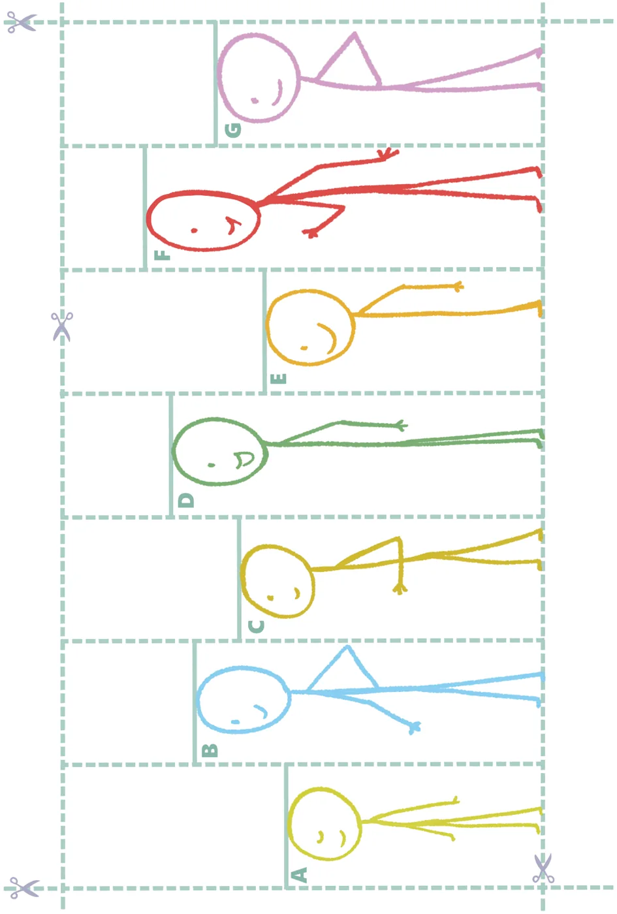

- •Brahmagupta’s formula for multiplication of fractions:
\(\frac{a}{b} \frac{c}{d} \frac{a \times\) c}{b \(\times\) d}
\(\times =\) .
- •When multiplying fractions, if the numerators and denominators
have some common factors, we can cancel them first before multiplying the numerators and denominators.
- •In multiplication - when one of the numbers being multiplied is
between 0 and 1, the product is less than the other number. If one of the numbers being multiplied is greater than 1, then the product is greater than the other number.
\(\frac{a}{b} \frac{b}{a}\)
- •The reciprocal of a fraction is . When we multiply a fraction by its
reciprocal, the product is 1.
- •Brahmagupta’s formula for division of fractions:
\(\frac{a}{b} \frac{c}{d} \frac{a}{b} \frac{d}{c} \frac{a \times\) d}{b \(\times\) c}
\(\div = \times =\) .
- •In division - when the divisor is between 0 and 1, the quotient is
greater than the dividend. When the divisor is greater than 1, the quotient is less than the dividend.
Chess Puzzles - Non-attacking Queens
Chess is a popular 2-player strategy game. This game has its origins in India. It is played on an \(8 \times 8\) chequered grid. There are 2 sets of pieces - black and white - one set for each player. Find out how each piece should move and the rules of the game. Here is a famous chess-based puzzle. From its current position, a Queen piece can move along the horizontal, vertical or diagonal. Place 4 Queens such that no 2 queens attack each other. For example, the arrangement below is not valid as the queens are in the line of attack of each other.
Now, place 8 queens on this \(8 \times 8\) grid so that no 2 queens attack each other!
Learning Material Sheets
